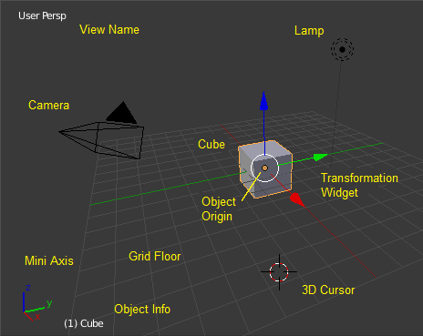

Startup Scene¶
After closing the splash the startup scene is displayed in the 3D View, if no other blend-file was loaded.

The Startup scene.
Elements¶
- Cube
The gray cube in the center of the scene is a mesh object. Because the cube is selected it is drawn with an orange outline.
- Object Origin
- The Origin of the object is displayed as an orange dot and it marks the cube’s (relative) position.
- Transformation Widget
- This widget is composed out of a white circle and three colored (red, green, and blue) arrows. It is used to move entities (i.e. the cube) in the scene.
- Lamp
- The circle with a thin line to the bottom is a light source illuminating the cube. Lights in: Blender Internal, Cycles.
- Camera
- The pyramid with a big triangle pointing upward is the camera used as point of view for rendering. Cameras in Blender Internal, Cycles.
- 3D Cursor
- The 3D cursor, a cross with a red and white circle, is used for placing objects in the scene.
- Grid Floor
- The gray squares forming a floor mark the zero height of the world. The red and green lines are the axis of the world coordinate system. They meet at the origin, which is also the position of the Cube. The Grid Floor settings are in the Display panel.
Overlays¶
The visibility and settings of the overlays can be set in the User Preferences.
- View Name
- If the viewport camera is not aligned, the view is named “User” plus the perspective of the viewport camera.
- Playback FPS
- Displays the Frames Per Second screen rate, while playing an animation back.
- Mini Axis
- Shows the axes of world coordinate system as plain lines with name.
- Object Info
- Shown in brackets is the current frame. Followed by the name of the active object. And optionally the selected shape key and in brackets (<>) the 标记符—小A翻译 name on the current frame. The color of the Object Info is set by the State Colors (keyframe only).